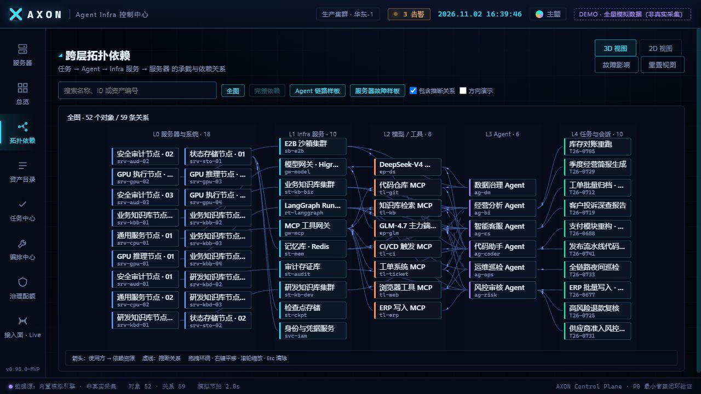
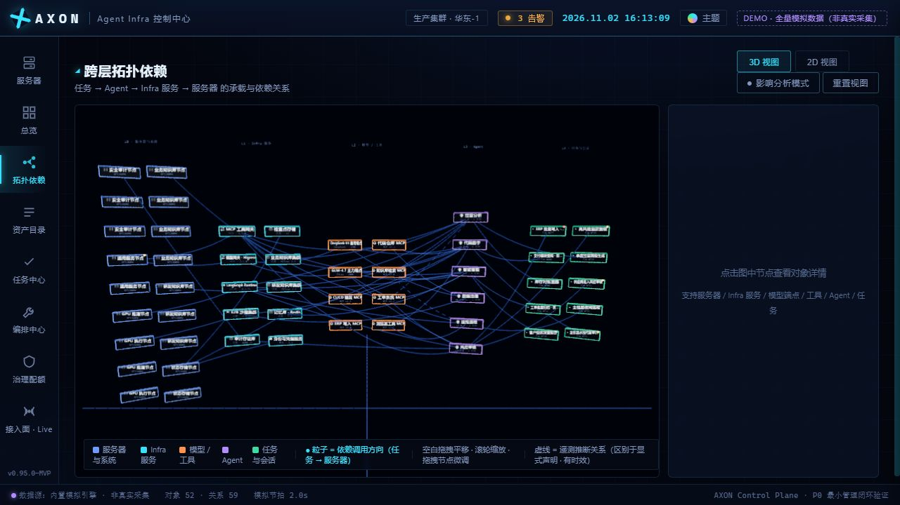
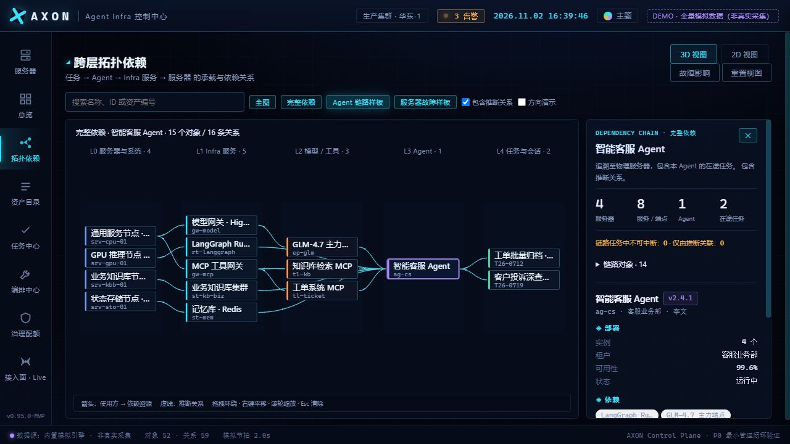
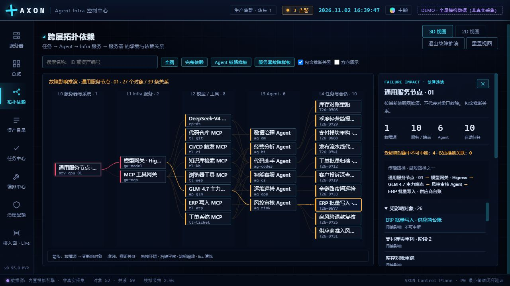

真实应用截图 · 同为 1280 × 720 浏览器窗口 · 52 个对象 / 59 条关系


改造前改造后屏幕标签保留完整对象 ID；默认全图显示全部 52 个标签。镜头限制在适合阅读的角度，详情按需展开；搜索、清除、重置及 2D／3D 切换共用状态。窗口和镜头布局本身是此次改造内容，因此前后构图不同。

智能客服 Agent → 服务及端点 → 4 台服务器，包含 8 个服务或端点和 2 个在途任务。共享资源的其他使用方不会混入本 Agent 的依赖链。所有 Agent 均可通过“完整依赖”使用相同分析规则。
打开 Agent 样板 ↗
CPU-01 故障源 → 服务 → Agent → 在途任务。覆盖 6 个 Agent、10 个任务，其中 4 个不可中断。点击对象显示一条最短传播路径；推断关系使用虚线并可排除。这是基于演示依赖图的推演，不代表发生了实际故障。
打开故障样板 ↗| 独立拓扑基准 · 全图 | 改造前 | 改造后 |
|---|---|---|
| 对象 / 关系 | 52 / 59 | 52 / 59 |
| 绘制调用 / 帧 | 293 | 5 |
| CPU 提交耗时 P95 | 5.7 ms | 1.1 ms |
| 全图资源：纹理 / 几何体 | 72 / 224 | 1 / 5 |